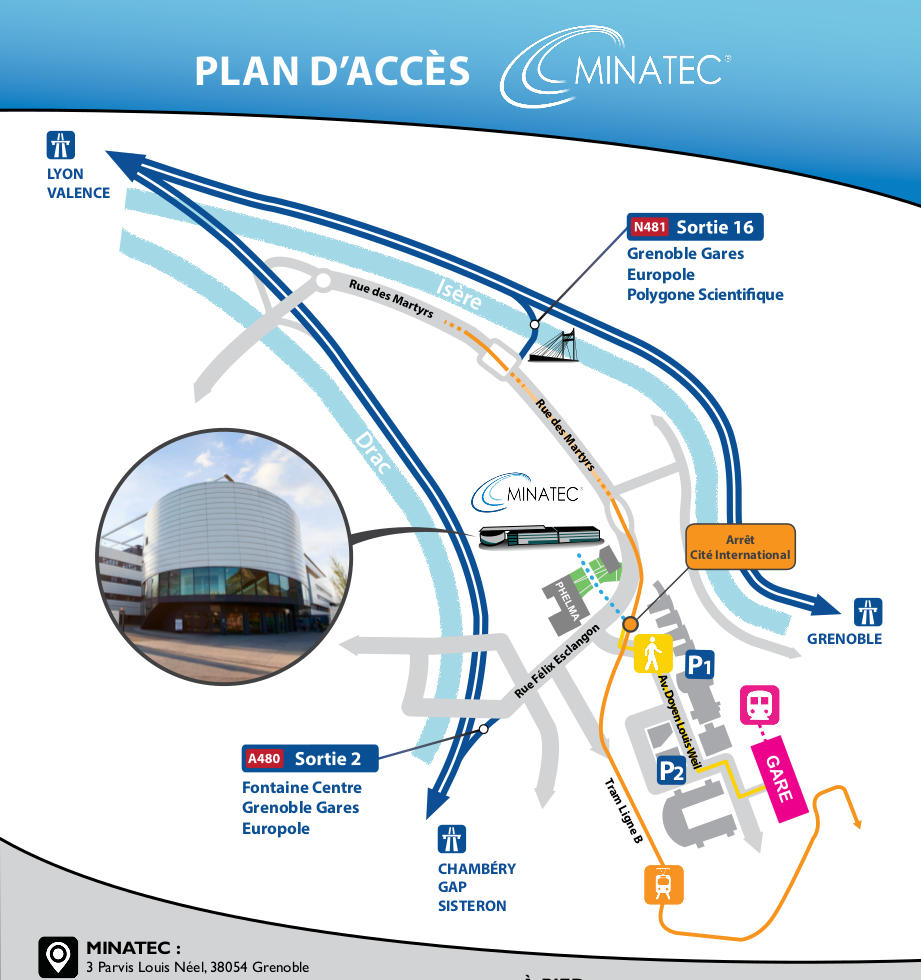
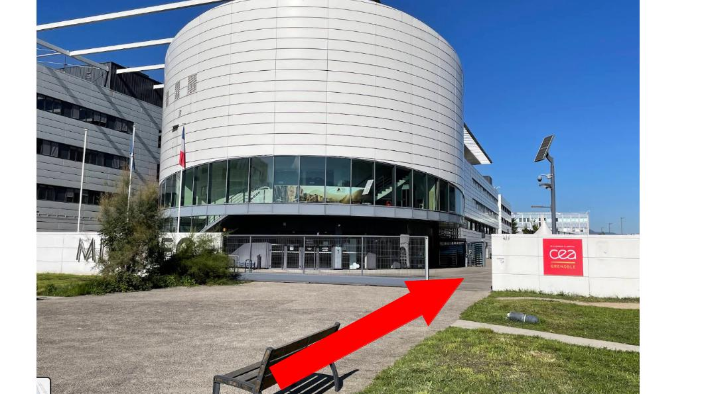

Date: le mer. 1er octobre, de 09h00 à 17h00 (suivi du social event)
Accès
Lieu: Maison Minatec. 3 Parvis Louis Néel - 38054 Grenoble. 45°11’44.4"N 5°42’35.8"E / google maps.
Depuis la gare SCNF, l’accès à la maison Minatec peut se faire en tramway (5 min., arrêt Cité Internationale), à pied (10 min.) ou en taxi (5 min.).


Social Event
Le social event aura lieu à partir de 19h00 à la Bastille, salle Lesdiguières.
Accès : depuis la gare du téléphérique, 3 quai Stéphane Jay, 38000 Grenoble (tram : arrêt Victor Hugo)
Compter environ 20 min. de montée depuis la gare basse du téléphérique (queue + trajet téléphérique).
Important! Le badge qui vous sera remis en début de journée sert de contre-marque pour l’accès au téléphérique.
Descente en téléphérique jusqu’à 24h.
Possibilité de monter à la Bastille à l’avance et de faire un petit tour (point de vue sur Grenoble depuis la terrasse du restaurant, grottes de Mandrin, …).
Possibilité de monter à pied depuis la fontaine au Lion ou depuis la porte de France (compter 1h).